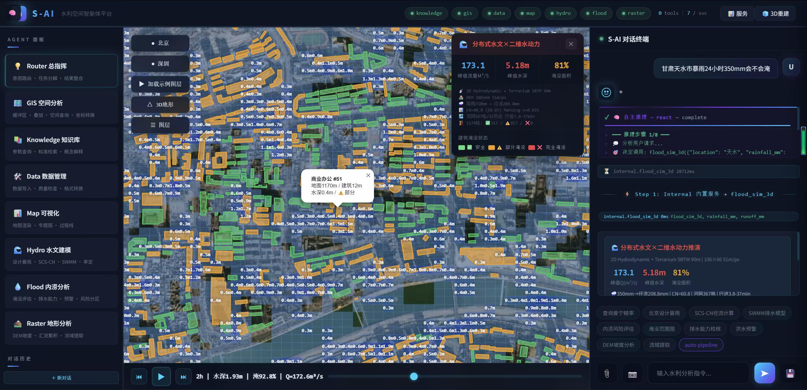
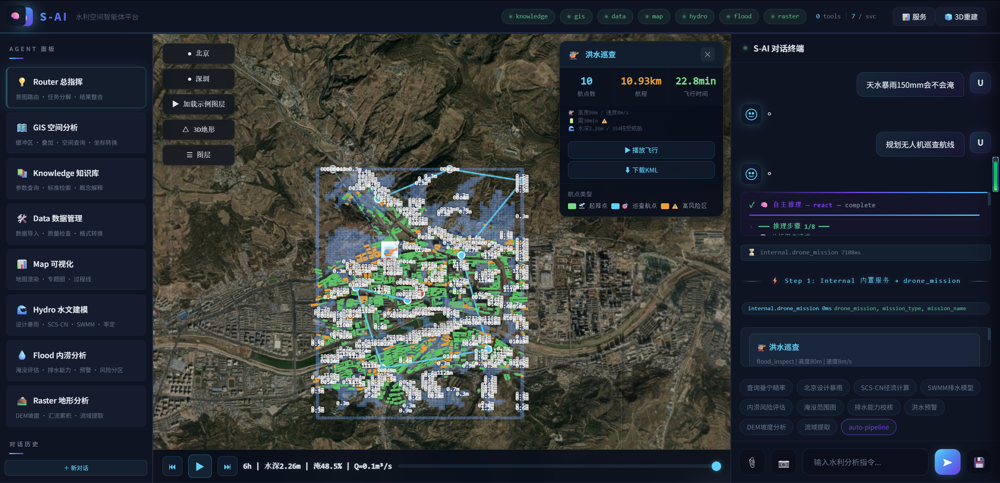
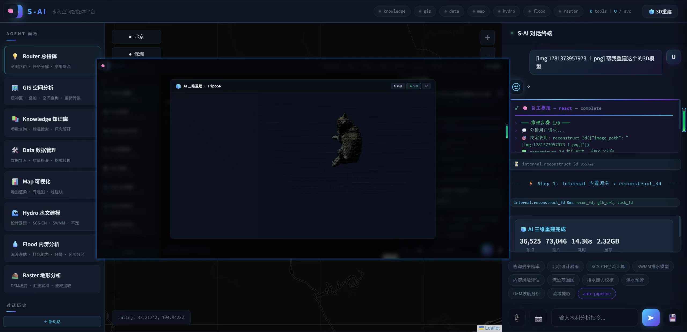

S-AI: A Multi-Agent Spatial Intelligence Framework
for Distributed Hydrological Modeling and Autonomous Flood Assessment
via LLM-Orchestrated MCP Architecture
Abstract
S-AI is a production-grade, multi-agent spatial intelligence platform that reconceptualizes flood modeling through LLM-orchestrated automation. The platform federates 42+ specialized geospatial and hydrological tools across eight MCP microservices, enabling natural language intent parsing via GLM-5.1 that autonomously decomposes user queries into executable hydrodynamic workflows. The system pioneers a distributed hydrological modeling chain that automates the complete pipeline from rainfall to building-level inundation assessment in under 15 seconds: SRTM 90m DEM acquisition → D8 watershed delineation → OSM land use-driven SCS-CN curve number assignment (CN 55–98) → time-area flow routing → 2D Manning shallow water inundation → per-building impact assessment. Beyond flood simulation, S-AI integrates autonomous drone mission planning, Sentinel-2 NDWI water body monitoring, TripoSR 3D reconstruction, and ERA5-Land precipitation grid analysis — all from natural language, with zero API cost beyond LLM inference.
🚀 Quick Demo Commands
📊 Key Metrics
🔄 Flood Simulation Pipeline
🖼️ System Screenshots






🏗️ Architecture
┌─────────────────────────────────────────────────────────────┐
│ 🖥️ Vue 3 Frontend (Port 5173) │
│ Leaflet Dark Map · Three.js 3D · SSE Streaming · 24+ Renderers │
├───────────────────────────────────────────────────────────────┤
│ ⚡ FastAPI Orchestration (Port 3000) │
│ GLM-5.1 ReAct · 3-Layer Routing · Debate · Auto-tool Gen │
│ Circuit Breaker · LRU Cache · Flood Cache · City Geocoding │
├───────────────────────────────────────────────────────────────┤
│ AI Modules: TripoSR · SAM+OSM · Sentinel-2 NDWI · ERA5-Land │
│ Distributed Hydro (D8+SCS-CN+Manning) · Drone TSP · SRTM COG │
├───────────────────────────────────────────────────────────────┤
│ GIS:5001 Data:5002 Knowledge:5003 Map:5004 │
│ Hydro:5005 Flood:5006 Raster:5007 │
└───────────────────────────────────────────────────────────────┘📋 Capability Comparison
| Dimension | Traditional (HEC-HMS+RAS+ArcGIS) | S-AI |
|---|---|---|
| Setup time | 9+ hours expert work | 13–18 seconds |
| Software | 3–5 separate applications | Single platform |
| CN assignment | Manual land use mapping | OSM auto-rasterization |
| Building impact | Manual GIS overlay | Per-building auto-sampling |
| Drone planning | Separate software | AI TSP + KML export |
| Cost | Licenses + HPC + expert | Free data + consumer GPU |
📦 Tech Stack
| Layer | Technology |
|---|---|
| LLM | GLM-5.1 (ReAct 8-step, 3-layer routing, debate validation) |
| Backend | Python 3.10 · FastAPI · MCP Protocol · 42+ tools |
| Frontend | Vue 3 · Vite 8 · TypeScript · TailwindCSS · Pinia |
| Map | Leaflet · CartoDB Dark · Rectangle draw → trigger analysis |
| 3D | Three.js · GLSL ShaderMaterial · OrbitControls |
| Remote Sensing | Sentinel-2 STAC · SRTM Terrarium COG · ERA5-Land |
| GIS Data | OpenStreetMap · ArcGIS World Imagery · Nominatim |
| AI Models | TripoSR · SAM vit_b · GLM-4V |
📁 Project Structure
S-AI/
├── web/
│ ├── server.py # Backend orchestration (2600+ lines)
│ ├── reconstruct/ # TripoSR 3D reconstruction
│ ├── segment/ # SAM + OSM building + landuse CN
│ ├── water_monitor/ # Sentinel-2 NDWI + change detection
│ ├── flood_sim/ # D8 + SCS-CN + Manning 2D
│ ├── drone/ # TSP mission planning + KML
│ └── frontend/ # Vue 3 + Vite
├── servers/ # 7 MCP microservices
├── docs/ # This page
└── paper.tex # Full LaTeX paper